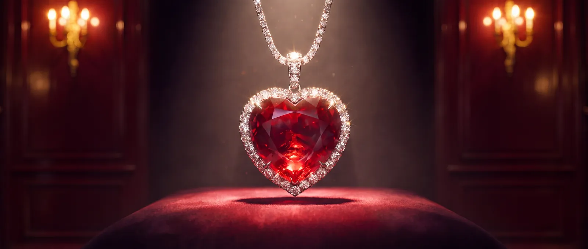
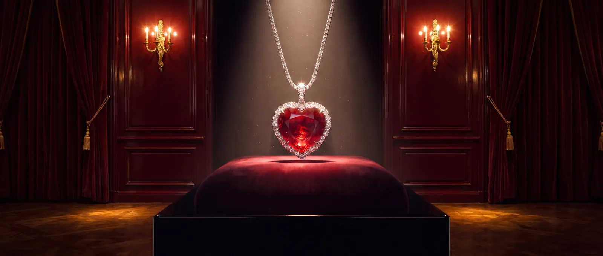

Room V of VII
Cuore
Heart ruby pendant
About Cuore
- 20.18 ct
- unheated ruby
- 34
- diamonds in the halo
- Mogok
- Burma
Pigeon blood is the name of a colour, not a promise. This ruby has it in daylight, under tungsten and in the dark.
Why it is rareMost rubies are heated to improve their colour. An unheated Burmese ruby above twenty carats is among the rarest coloured stones on earth.
The rough came out of the Mogok valley in Burma and was never heated. Its silk, the fine needles inside it, softens the red so the colour seems to sit just under the surface.
The heart was the cutter's idea, not the client's. He said the stone already had the shape and only needed permission.
- Metal
- Platinum and rose gold
- Ruby
- Heart shape, 20.18 carats, Mogok, Burma, unheated
- Diamonds
- A halo of 34 and a rivière chain
- Hours at the bench
- 920
- Room
- V, the oxblood room

